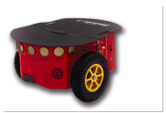
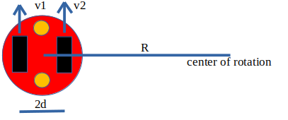

The objective of this task is to move your differential drive robot and complete the arena by wall following. You will be provided with a differential drive robot along with 2 proximity sensors.
Proximity Sensors:
This is a non-contact type of sensor which can detect the presence of an object near its vicinity. It works by emmiting rays and receiving them after they got reflected by the object. You can check more about them here or see this. In this task you will use proximity sensors as provided by coppeliasim. In coppeliasim the proximity sensors the distance of the detected object from it along the normal vector of its surface. Some coppeliasim resources:
Proximity SensorsProximity sensor types and mode of operation
Proximity sensor properties
Proximity sensor detection parameter dialog
Differential Drive Robot:
A Differential Drive is consist of two wheels powered by two different actuators and minimum one castor wheel. By setting different velocity of the two wheels the drive can be made to follow any trajectory. video
 if v1 == v2 the bot will move straight. if v1 are v2 different then but have same sign then the bot’s center will move with a velocity = (v1+v2)/2, and angular velocity = (v1-v2)/2d. The radius of curvature will be R = (v1+v2)*d/(v1-v2). If v1 is equal to v2 but opposite in sign then the bot will just rotate about its center for a deep detailed kinematics refer this